Cómo usar cada sección del sistema, con capturas, señales y ejemplos
Escrito para que lo pueda usar cualquier persona del equipo, aunque no esté acostumbrada a la computadora. Leelo con el panel abierto al lado y andá probando.
Contenido
Cómo leer este manual
Palabras que vas a ver
Entrar al sistema
El Escritorio
Bandeja de mensajes
Avisos del bot
Bot recepcionista
Menús del chat
Consultas (la lista)
Tablero de consultas
La ficha de una consulta
Marcar una consulta como perdida
Clientes
Presupuestos y expedientes
Armar el presupuesto: servicios y totales
Plan de pagos y cuotas
Ideas de viaje (catálogo)
Importar una idea con IA
Tareas
Caja: cobros y pagos
Reportes financieros
Seguimiento de consultas (estadísticas)
Seguimiento automático
Marca blanca (configuración)
Usuarios del equipo
Proveedores
Canales y plantillas de WhatsApp
Preguntas frecuentes
El ejemplo que sigue todo el manualLaura Gómez le escribe a la agencia por WhatsApp porque quiere ir a Punta Cana en enero con su familia. A lo largo del manual vas a ver qué hace el equipo en cada pantalla: responderle, armarle el presupuesto, cobrarle la seña y las cuotas, y hacer el seguimiento hasta que viaja.
Antes de empezar
1. Cómo leer este manual
Cada sección tiene siempre las mismas partes, para que sepas dónde mirar:
Qué vas a ver
Qué significa
Menú: Ventas → Consultas
Dónde está la pantalla. Buscá esos nombres en el menú de la izquierda.
¿Para qué sirve?
Una explicación corta, en una o dos líneas.
1
En las capturas, el recuadro rojo marca un botón o un dato, y el círculo con número te dice cuál es. Debajo de la imagen está la explicación de cada número.
Paso a paso
Lo que tenés que hacer, en orden. Hacé un paso y recién después pasá al siguiente.
Ejemplo
Un caso real, con Laura y su viaje a Punta Cana.
Consejo
Algo que te ahorra tiempo.
Atención
Algo importante para no equivocarse.
2. Palabras que vas a ver
Palabra
Qué es
Hacer clic
Apretar una vez el botón izquierdo del mouse (o tocar una vez el panel táctil de la notebook) sobre algo.
Botón
Un rectángulo con texto, como Crear Consulta. Al hacerle clic, hace algo.
Campo
Un recuadro blanco donde se escribe, por ejemplo el nombre o el teléfono.
Desplegable
Un campo con una flechita ⌄. Al hacerle clic se abre una lista y elegís una opción.
Interruptor
Un botoncito que se desliza a un costado: encendido (de color) o apagado (gris).
Pestaña
Títulos uno al lado del otro arriba de una lista. Al hacer clic en uno, cambia lo que se muestra debajo.
Lista o tabla
Filas con datos. Cada fila es una persona, un viaje o un movimiento.
Ventana (o modal)
Un cuadro que aparece encima de la pantalla para completar algo. Se cierra con Cancelar o con la ✕.
Bajar (desplazarse)
Mover la ruedita del mouse hacia vos, o deslizar dos dedos hacia arriba en el panel táctil, para ver lo que está más abajo.
Consulta
Una persona interesada en viajar que todavía no compró. También le dicen lead.
Expediente (o file)
El viaje de un cliente, desde el presupuesto hasta que viaja.
No tengas miedo de probar Casi todo se puede corregir. Lo único que borra para siempre son los botones rojos que dicen Eliminar o Borrar, y siempre te piden confirmar antes.
Primeros pasos
3. Entrar al sistema
Dirección: la de tu agencia, terminada en /admin
Es la puerta de entrada. Cada persona del equipo tiene su propio correo y contraseña.
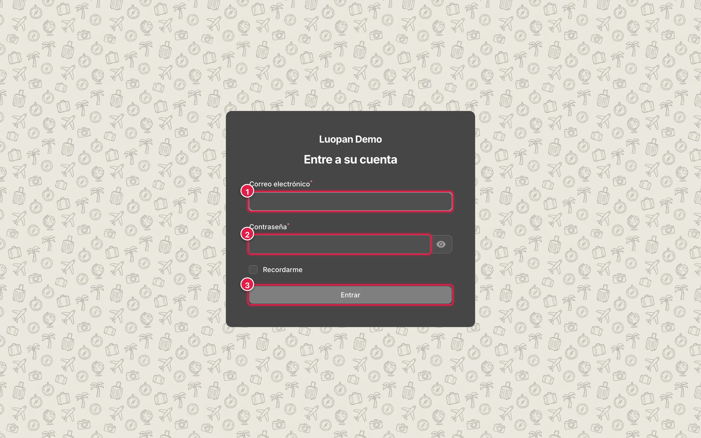
La pantalla de ingreso
1
Correo electrónico: escribí tu correo, el mismo que te dio el administrador.
2
Contraseña: escribila con cuidado. El ojito de la derecha la muestra, para que veas si la escribiste bien.
3
Entrar: hacé clic acá (o apretá Enter en el teclado).
Abrí el navegador (Chrome, Edge o Safari) y escribí la dirección del panel de tu agencia.
Hacé clic en el campo Correo electrónico y escribí tu correo.
Hacé clic en Contraseña y escribila.
Si es tu computadora, podés tildar Recordarme para no tener que escribirla cada vez.
Hacé clic en Entrar.
¿Olvidaste la contraseña? Pedile a un administrador que te la cambie desde Sistema → Usuarios (sección 25). Nunca compartas tu contraseña con otra persona: cada uno tiene la suya.
4. El Escritorio
Menú: Escritorio (la primera opción)
Es la pantalla de inicio. Te muestra de un vistazo cómo viene el trabajo del día y tiene atajos a lo que más se usa.
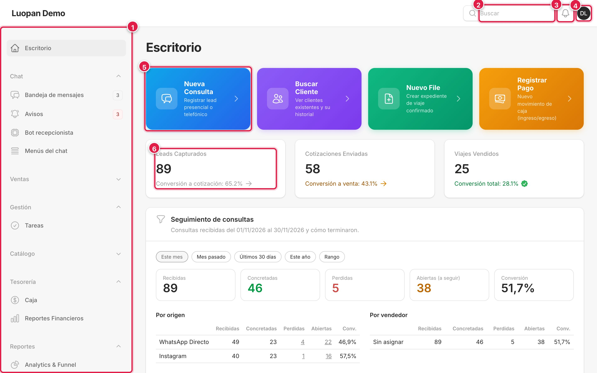
El Escritorio, con el menú a la izquierda
1
Menú de la izquierda: desde acá vas a todas las secciones. Está agrupado por temas: Chat, Ventas, Gestión, Catálogo, Tesorería, Reportes, Configuración y Sistema. Hacé clic en el nombre de un grupo para abrirlo o cerrarlo.
2
Buscar: escribí un nombre, un teléfono o un número de expediente y aparece al instante.
3
Campanita: tus notificaciones (por ejemplo, "una consulta pide hablar con una persona").
4
Tu usuario: para cambiar entre modo claro u oscuro y para salir del sistema.
5
Atajos de colores:Nueva Consulta, Buscar Cliente, Nuevo File y Registrar Pago. Un clic y vas directo.
6
Números del negocio: consultas recibidas, presupuestos enviados y viajes vendidos, con el porcentaje que avanza de una etapa a la otra.
Los números al lado del menú Un globito con número (por ejemplo, 3 al lado de Avisos) quiere decir que hay cosas esperándote ahí.
Si ves un cartel rojo que dice "El cron no está corriendo" Avisale al administrador: significa que los envíos automáticos (recordatorios, seguimientos) están frenados. Vos podés seguir trabajando normalmente.
Chat
5. Bandeja de mensajes
Menú: Chat → Bandeja de mensajes
Acá llegan juntos todos los mensajes de WhatsApp, Instagram y Messenger. Desde acá leés y respondés sin tocar el celular.
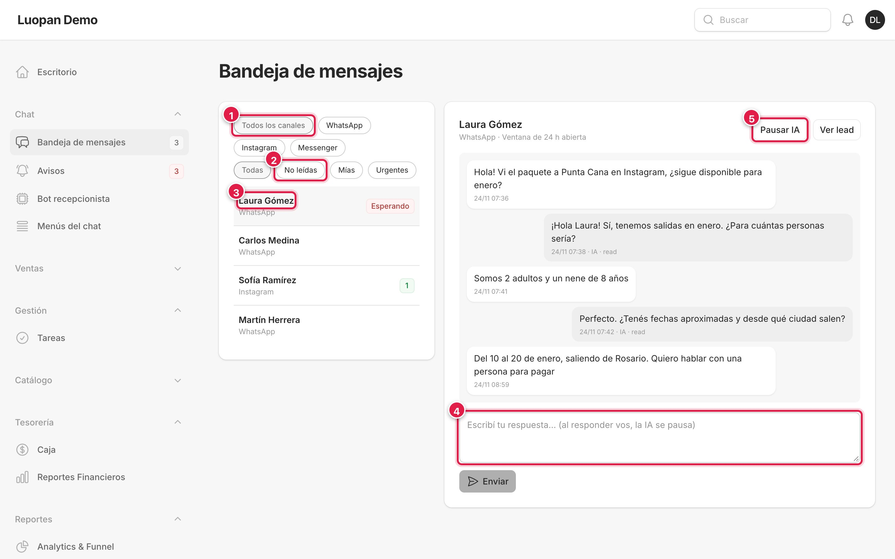
A la izquierda, las conversaciones. A la derecha, la conversación abierta
1
Canales: mostrar todos, o solo WhatsApp, Instagram o Messenger.
2
Filtros:Todas, No leídas, Mías (las que tenés asignadas) y Urgentes (piden una persona).
3
Una conversación: hacé clic para abrirla. El número verde dice cuántos mensajes sin leer tiene. La etiqueta roja Esperando quiere decir que la persona está esperando que alguien del equipo le responda.
4
Cuadro para escribir: escribí tu respuesta acá y apretá Enviar.
5
Pausar IA: frena al asistente automático en esta conversación, para que hables solo vos.
Hacé clic en No leídas para ver solo lo nuevo.
Hacé clic en la conversación de arriba de todo.
Leé lo que escribió la persona y lo que ya le respondió el asistente (aparece marcado como IA).
Escribí tu respuesta en el cuadro de abajo y hacé clic en Enviar.
Ejemplo Laura escribió: "Quiero hablar con una persona para pagar". Su conversación aparece primera con la etiqueta Esperando. Hacés clic, ves que el bot ya le preguntó cuántos viajan y desde dónde, y le respondés: "¡Hola Laura! Soy Ana, te armo el presupuesto ahora mismo." Al responder vos, el asistente se pone en pausa solo en esa conversación.
La regla de las 24 horas (es de WhatsApp, no del sistema) Podés escribir libremente hasta 24 horas después del último mensaje del cliente. Pasado ese tiempo, en WhatsApp solo se pueden mandar plantillas aprobadas (sección 27): la pantalla te muestra cuál elegir.
6. Avisos del bot
Menú: Chat → Avisos
Es la lista de cosas que el asistente automático te pide que revises. Miralos varias veces al día.
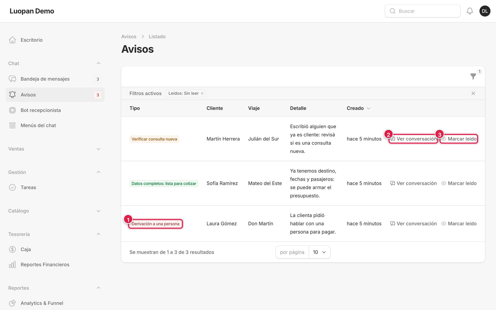
Los avisos pendientes
1
Tipo de aviso (ver la tabla de abajo).
2
Ver conversación: abre el chat con ese cliente en la bandeja.
3
Marcar leído: cuando ya lo resolviste, para que desaparezca de la lista.
Aviso
Qué tenés que hacer
Derivación a una persona
El cliente necesita a alguien del equipo: pidió hablar con una persona, quiere pagar o el bot no supo qué contestar. Respondele cuanto antes.
Datos completos: lista para cotizar
El bot ya juntó destino, fechas y pasajeros. Armá el presupuesto (sección 14).
Verificar consulta nueva
Escribió alguien que ya era cliente. Fijate si es un viaje nuevo o la misma consulta de antes.
Ejemplo Aparece Derivación a una persona con el detalle "La clienta pidió hablar con una persona para pagar". Hacés clic en Ver conversación, le respondés a Laura y después volvés acá y hacés clic en Marcar leído.
7. Bot recepcionista
Menú: Chat → Bot recepcionista · solo administradores
Es el asistente automático que contesta los primeros mensajes, a cualquier hora, y junta los datos del viaje para que el equipo después mande el presupuesto.
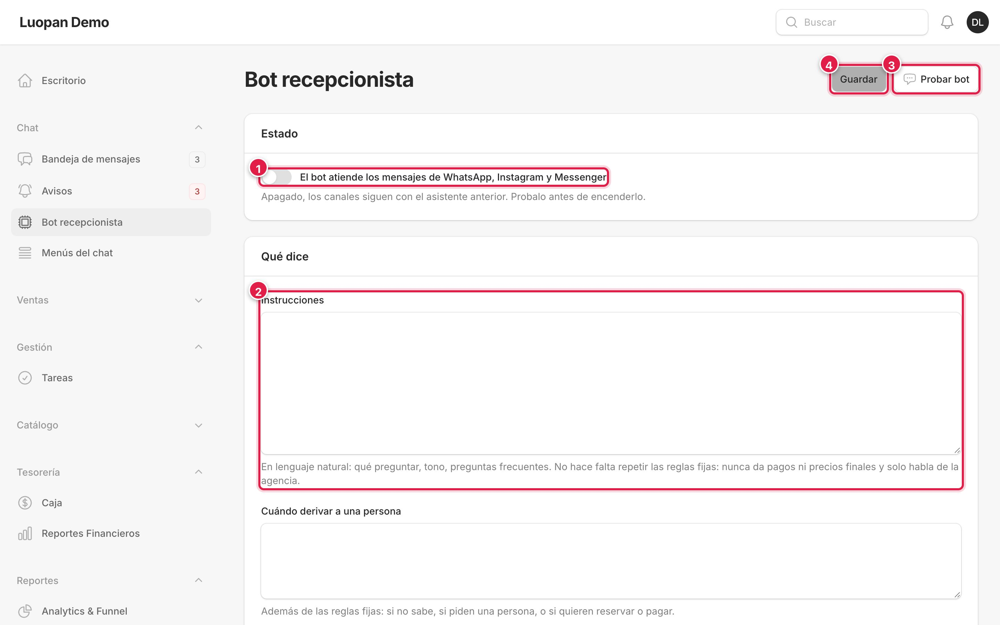
La configuración del bot
1
Interruptor de encendido: prende o apaga el bot para todos los canales.
2
Instrucciones: escribí, con tus palabras, cómo querés que hable y qué tiene que preguntar. Por ejemplo: "Tratá de vos, sé cálido, preguntá siempre desde qué ciudad sale".
3
Probar bot: abre un chat de prueba para escribirle como si fueras un cliente. No le manda nada a nadie.
4
Guardar: guarda los cambios. Si no hacés clic acá, no se aplican.
Escribí las Instrucciones y, más abajo, Cuándo derivar a una persona.
Bajá y revisá Promociones vigentes y Horario y topes (cuántas respuestas por día y por cuántas horas se pausa cuando responde una persona).
Hacé clic en Guardar.
Hacé clic en Probar bot y escribile como si fueras un cliente. Fijate si responde como querés.
Cuando estés conforme, encendé el interruptor y guardá.
Lo que el bot nunca hace No da precios finales, formas de pago, datos bancarios ni confirma lugares. Cuando el cliente pregunta eso, le pasa la conversación a una persona y te deja un aviso. Así nadie promete algo que la agencia no puede cumplir.
8. Menús del chat
Menú: Chat → Menús del chat · solo administradores
Son listas de opciones que el cliente elige con un toque en WhatsApp, en vez de escribir. Se abren cuando el cliente escribe una palabra clave, por ejemplo "destinos".
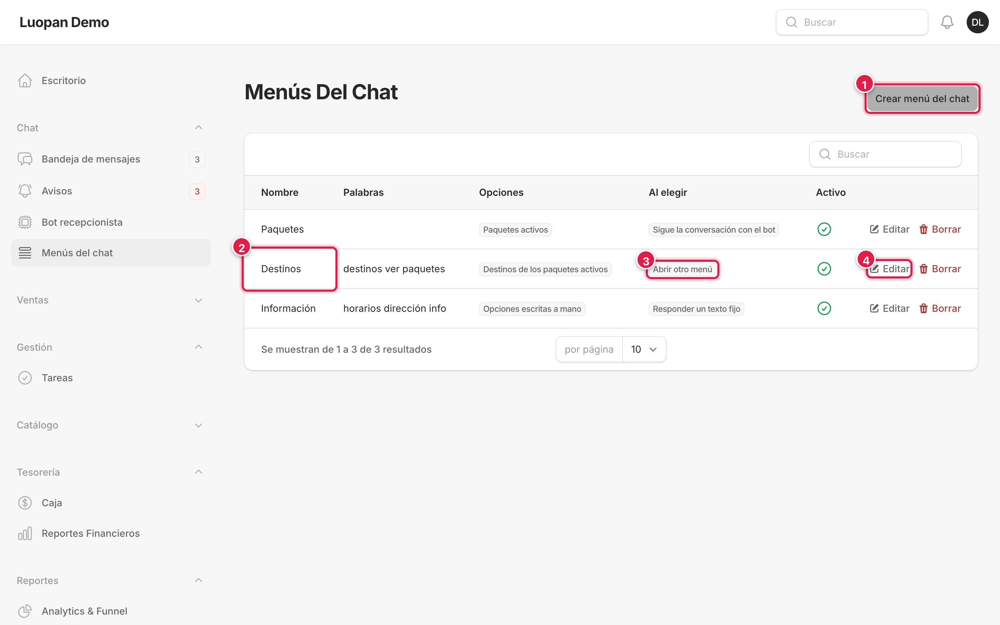
Los menús configurados
1
Crear menú del chat: para armar uno nuevo.
2
Nombre del menú y, al lado, las palabras que lo abren.
3
Al elegir: qué pasa cuando el cliente toca una opción. Puede abrir otro menú, responder un texto fijo o seguir la conversación con el bot.
4
Editar: cambiar el menú.
De dónde salen las opciones
Qué muestra
Destinos de los paquetes activos
Un renglón por destino (por ejemplo Bariloche, Punta Cana, Roma), con cuántos paquetes tiene cada uno. Se arma solo con tu catálogo.
Paquetes activos
Los paquetes publicados. Si viene de un menú de destinos, muestra solo los de ese destino.
Opciones escritas a mano
Las que vos escribas, por ejemplo Horarios, Dirección, Medios de pago.
Ejemplo Un cliente escribe "destinos". Le llega un botón Ver destinos; lo toca y elige Punta Cana. Enseguida recibe otro menú con los paquetes de Punta Cana. Elige uno, y el bot sigue la conversación preguntándole fechas y pasajeros.
Límites de WhatsApp Cada menú muestra hasta 10 renglones. Si hay más opciones, el último renglón dice Ver más… y trae las siguientes. Los títulos largos se cortan a 24 letras.
Ventas
9. Consultas (la lista)
Menú: Ventas → Consultas
Todas las personas interesadas en viajar. La lista ya viene ordenada por urgencia: siempre empezá por arriba.
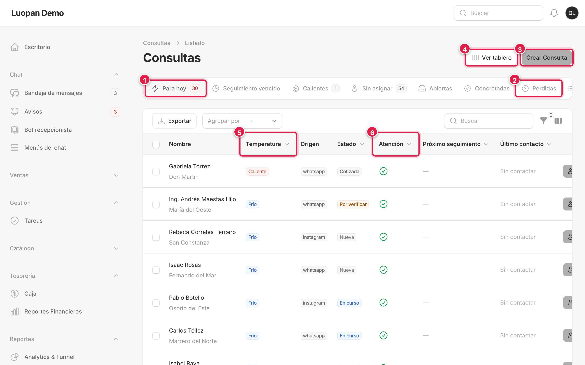
La lista de consultas
1
Para hoy: lo que tenés que atender hoy (se abre siempre primero). El número dice cuántas hay.
2
Perdidas: las que terminaron sin venta. Al lado están Abiertas y Concretadas.
3
Crear Consulta: para cargar a mano a alguien que llamó o vino a la agencia.
4
Ver tablero: la misma información en columnas (sección 10).
5
Temperatura: qué tan cerca está de comprar: Caliente, Tibio o Frío.
6
Atención: el tilde verde dice que nadie está esperando. Si pide una persona, se marca para que la atiendas primero.
Estado
Qué quiere decir
Nueva
Nadie la atendió todavía.
Por verificar
El bot abrió una consulta para alguien que ya tenía otra. Revisala desde Avisos.
En curso
Ya se habló con la persona.
Cotizada
Ya tiene un presupuesto enviado.
Reservada
Compró.
Cerrada
Terminó sin compra.
Tu rutina diaria Abrí la pestaña Para hoy y atendé de arriba hacia abajo hasta que quede vacía. Así no se te escapa nadie.
10. Tablero de consultas
Menú: Ventas → Tablero de consultas
Las mismas consultas, pero en columnas por estado. Sirve para ver de un vistazo cuántas hay en cada etapa y moverlas.
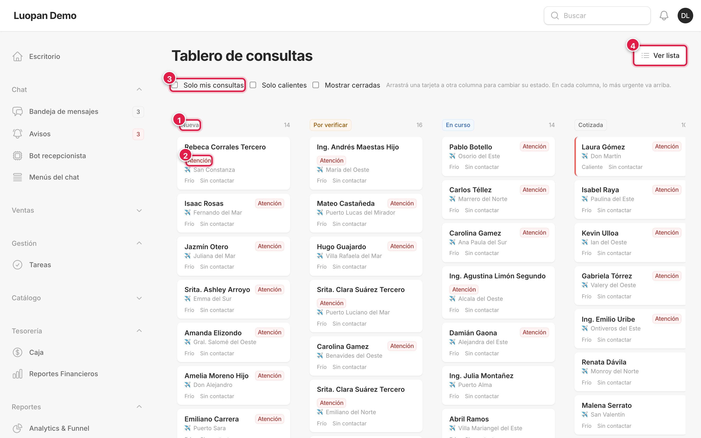
El tablero: una columna por estado
1
Columna con el nombre del estado y la cantidad de consultas.
2
Atención: esa persona necesita a alguien del equipo.
3
Solo mis consultas y Solo calientes: tildalos para ver menos tarjetas.
4
Ver lista: vuelve a la lista de la sección 9.
Buscá la tarjeta de la consulta.
Hacé clic sobre ella y mantené apretado el botón del mouse.
Sin soltar, arrastrala hasta la columna nueva (por ejemplo, de En curso a Cotizada).
Soltá el botón. El estado cambia solo.
¿Lista o tablero? La lista es para el trabajo de todos los días (te dice a quién atender primero). El tablero es para la revisión semanal: ver cómo viene el embudo de ventas.
11. La ficha de una consulta
Ventas → Consultas → clic en una fila
Todo lo que se sabe de esa persona y de su viaje, y los botones para avanzar con la venta.
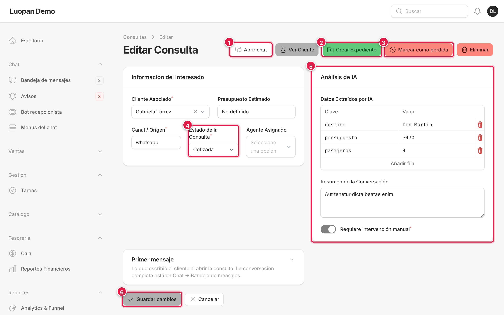
Editar una consulta
1
Abrir chat: va directo a la conversación en la bandeja.
2
Crear Expediente: arma el presupuesto copiando destino, pasajeros y fechas de esta consulta.
3
Marcar como perdida: cuando la persona no va a comprar (sección 12).
4
Estado de la Consulta: en qué etapa está.
5
Análisis de IA: los datos que el asistente sacó de la charla (destino, presupuesto, pasajeros) y un resumen. Podés corregirlos.
6
Guardar cambios: no te olvides de hacer clic acá después de cambiar algo.
Ejemplo Abrís la consulta de Laura. En Análisis de IA ya dice destino: Punta Cana, pasajeros: 3. Le asignás tu nombre en Agente Asignado, hacés clic en Guardar cambios y después en Crear Expediente para armarle el presupuesto.
La IA ayuda, no decide Revisá siempre lo que completó. Si algo está mal, corregilo y guardá.
12. Marcar una consulta como perdida
Ficha de la consulta → botón rojo «Marcar como perdida»
Cuando la persona no compra, se cierra la consulta diciendo por qué. Con eso, después se ve en qué se pierden ventas (sección 22).
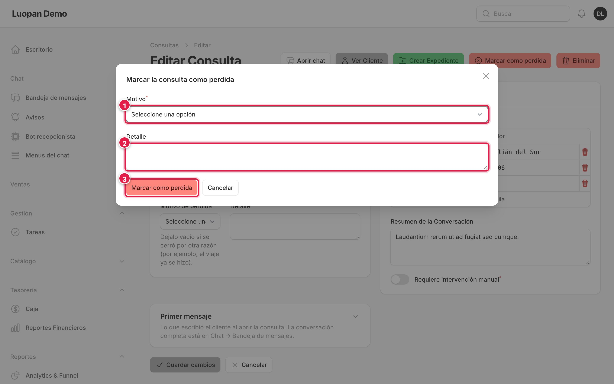
La ventana para cerrar una consulta sin venta
1
Motivo: elegí uno de la lista: Precio, Fechas o disponibilidad, Compró en otra agencia, Dejó de responder, Cambió de planes u Otro.
2
Detalle: opcional. Una frase que explique qué pasó.
3
Marcar como perdida: confirma y cierra la consulta.
Ejemplo Martín preguntó por Bariloche, pero le pareció caro y compró en otro lado. Elegís el motivo Compró en otra agencia, escribís en el detalle "Consiguió más barato con hotel 3 estrellas" y confirmás.
¿Y si vuelve a escribir? No pasa nada: si la persona vuelve a escribir más adelante, el sistema abre una consulta nueva y queda todo el historial.
13. Clientes
Menú: Ventas → Clientes
La agenda de las personas que viajan con la agencia: datos de contacto, documento y todo su historial.
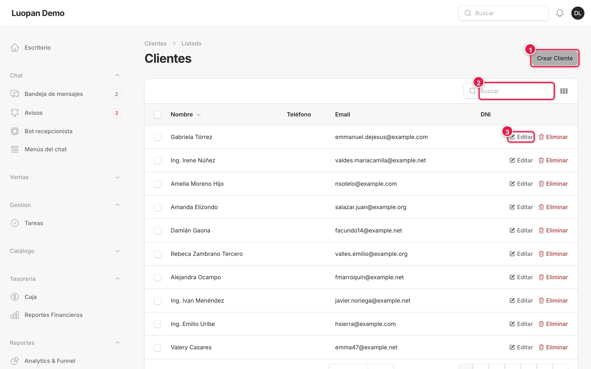
La lista de clientes
1
Crear Cliente: cargar una persona nueva.
2
Buscar: escribí parte del nombre, del correo o del documento.
3
Editar: abre la ficha. Adentro, la pestaña Consultas muestra todo lo que preguntó y viajó.
El mismo cliente no se repite Si alguien ya cargado vuelve a escribir, el sistema lo reconoce por su teléfono o su correo y lo suma a su ficha.
Cargá bien el documento El DNI o pasaporte es lo que el cliente usa para entrar a su portal, donde ve sus viajes y cuotas.
14. Presupuestos y expedientes
Menú: Ventas → Presupuestos / Files
Cada viaje es un expediente. Empieza como presupuesto y, a medida que el cliente paga, pasa a señado y después a emitido.
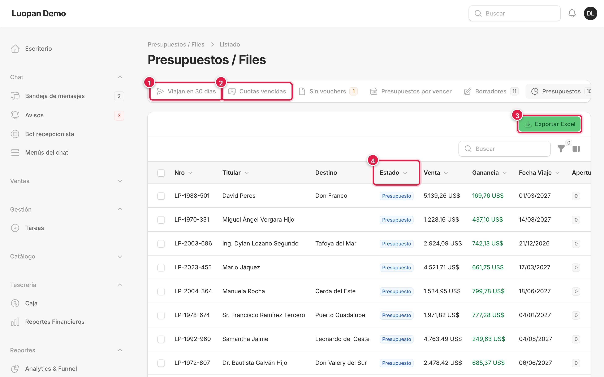
La lista de presupuestos y expedientes
1
Viajan en 30 días: los que salen pronto, el más cercano primero.
2
Cuotas vencidas: clientes que deben una cuota. Más a la derecha: Sin vouchers y Presupuestos por vencer.
3
Exportar Excel: descarga la lista para trabajarla en una planilla.
4
Estado de cada expediente (ver tabla).
Estado
Qué quiere decir
Borrador
Lo estás armando.
Presupuesto
Listo para mandar al cliente.
Señado
El cliente pagó la seña. Pasa solo cuando cobrás la primera cuota.
Emitido
Viaje confirmado y documentación emitida.
Cancelado
Se cayó.
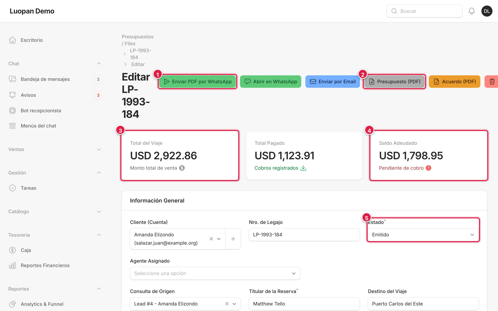
Arriba de un expediente: botones y saldo del cliente
1
Enviar PDF por WhatsApp: le manda el presupuesto en PDF al chat del cliente.
2
Presupuesto (PDF): lo descarga para imprimirlo o mandarlo por otro lado. Al lado está Acuerdo (PDF), el contrato.
3
Total del Viaje, en dólares.
4
Saldo Adeudado: cuánto le falta pagar al cliente.
5
Estado del expediente.
¿El cliente lo abrió? Cuando le mandás el link del presupuesto, el sistema anota cada vez que el cliente lo abre. Lo ves en la pestaña Historial de Actividad, abajo de todo.
15. Armar el presupuesto: servicios y totales
Dentro de un expediente → bajar hasta «Detalle de Servicios»
Cada renglón es un servicio del viaje (vuelo, hotel, traslado). Cargás cuánto te cuesta y a cuánto lo vendés, y el sistema suma todo solo.
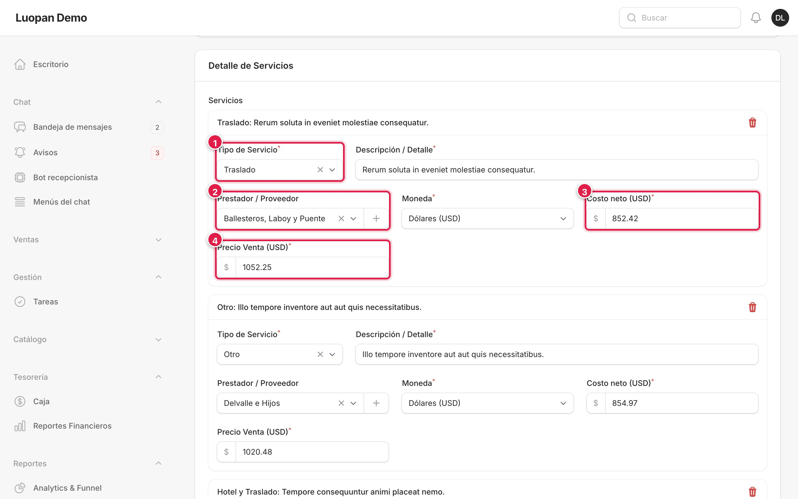
Los servicios del viaje
1
Tipo de Servicio: vuelo, hotel, traslado, asistencia, etc.
2
Prestador / Proveedor: quién da el servicio. El + permite crear uno nuevo sin salir.
3
Costo neto: lo que le pagás vos al proveedor.
4
Precio Venta: lo que paga el cliente.
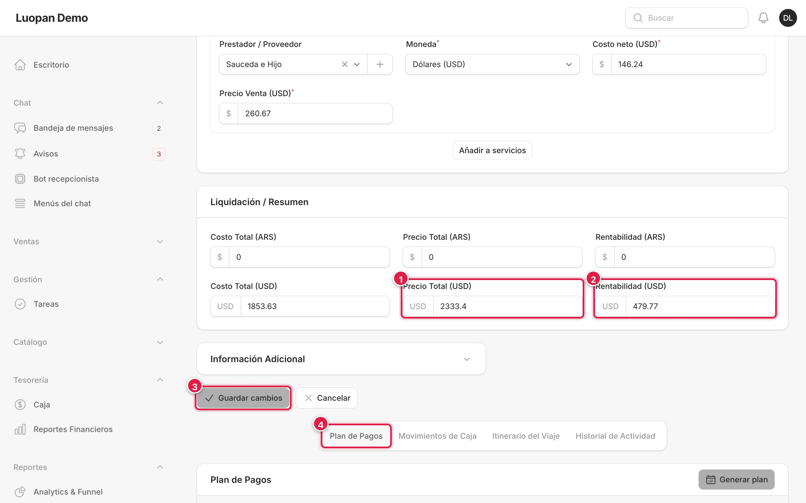
Los totales que calcula el sistema
1
Precio Total (USD): lo que paga el cliente por todo el viaje.
2
Rentabilidad (USD): lo que gana la agencia.
3
Guardar cambios.
4
Plan de Pagos: la pestaña de las cuotas (sección 16).
Completá el Tipo de Servicio y una Descripción (por ejemplo, "Hotel Barceló, 10 noches, todo incluido").
Elegí el Proveedor y la Moneda. Si es en pesos, elegí la cotización del dólar del día.
Escribí el Costo neto y el Precio Venta.
Para agregar otro servicio, hacé clic en Añadir a servicios.
Revisá los totales en Liquidación / Resumen y hacé clic en Guardar cambios.
Ejemplo Para Laura cargás 3 servicios: vuelo Rosario–Punta Cana, hotel todo incluido por 10 noches y traslados. El sistema muestra que el viaje sale USD 2.922 y que la agencia gana USD 479.
Todo se lleva en dólares Aunque cargues un servicio en pesos, el sistema lo pasa a dólares con la cotización que elegiste y la guarda. Así el saldo no cambia aunque el dólar suba o baje.
16. Plan de pagos y cuotas
Dentro de un expediente → pestaña «Plan de Pagos» (abajo de todo)
Divide el viaje en una seña y cuotas, con fecha de vencimiento. El sistema avisa solo al cliente antes de cada vencimiento.
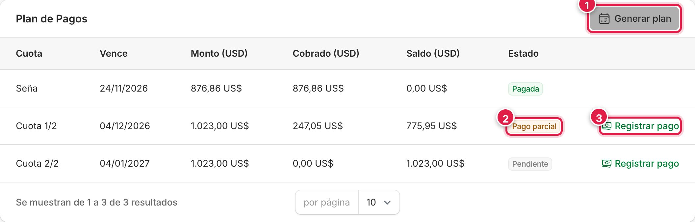
El plan de pagos de un viaje
1
Generar plan: crea la seña y las cuotas.
2
Estado de la cuota:Pendiente, Pago parcial, Pagada o Vencida.
3
Registrar pago: anota lo que pagó el cliente en esa cuota.
Hacé clic en Generar plan.
Completá la Seña (%) (por ejemplo 30), la cantidad de cuotas, el primer vencimiento y la frecuencia (mensual, quincenal o semanal).
Confirmá. Aparecen la seña y las cuotas con sus fechas.
Cuando el cliente pague, hacé clic en Registrar pago en esa cuota, completá el monto, la moneda y el método, y confirmá.
Ejemplo Laura paga la seña del 30% por transferencia. Hacés clic en Registrar pago en la fila Seña: la cuota pasa a Pagada, el expediente pasa solo a Señado y el cobro aparece en la Caja (sección 20).
La última cuota tiene que vencer antes del viaje Por seguridad, la última cuota tiene que vencer al menos 30 días antes de la salida. Si no se cumple, el sistema te dice cuál es la fecha límite.
Recordatorios automáticos El cliente recibe un aviso 3 días antes del vencimiento, el mismo día y 2 días después si todavía no pagó. No tenés que acordarte vos.
Catálogo
17. Ideas de viaje (catálogo)
Menú: Catálogo → Ideas de Viaje
Los paquetes que se publican en la web de la agencia y que el bot y los menús del chat ofrecen.
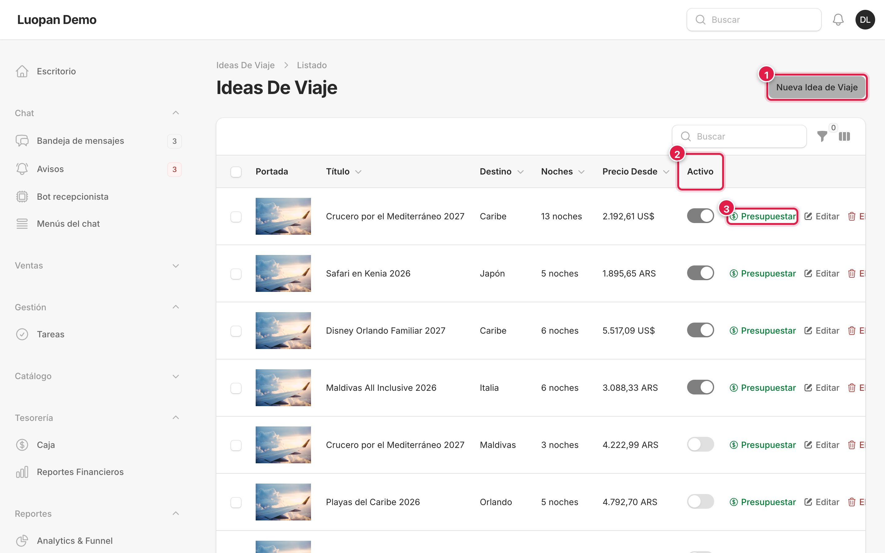
El catálogo de paquetes
1
Nueva Idea de Viaje: cargar un paquete nuevo.
2
Activo: el interruptor encendido quiere decir que se ve en la web. Apagalo para ocultarlo sin borrarlo.
3
Presupuestar: arma un presupuesto para un cliente a partir de este paquete.
Para publicar hace falta una imagen de portada, un precio y un resumen. Sin eso, el paquete no se puede activar.
18. Importar una idea con IA
Menú: Catálogo → Importar Ideas de Viaje
Le pasás la oferta de un operador (un link, un texto o un PDF) y la IA arma un borrador del paquete. Vos lo revisás antes de publicarlo.
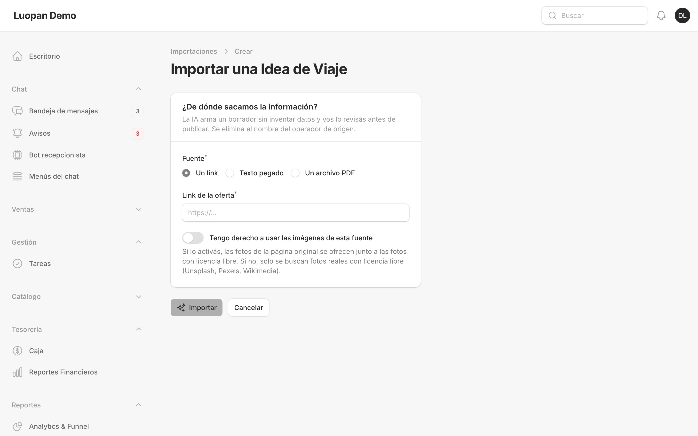
Elegir de dónde sale la información
En Fuente, elegí Un link, Texto pegado o Un archivo PDF.
Pegá el link, pegá el texto o subí el PDF.
Si tenés permiso para usar las fotos de esa página, encendé el interruptor de las imágenes. Si no, el sistema busca fotos con licencia libre.
Hacé clic en Importar y esperá menos de un minuto.
Revisá el borrador: los datos dudosos aparecen marcados. Corregí lo que haga falta.
Elegí las fotos y la portada, y hacé clic en Publicar.
La IA no inventa Lo que la oferta no dice queda vacío, y también saca el nombre y los datos del operador original.
Revisá siempre antes de publicar La IA se puede equivocar, y el paquete sale con el nombre de tu agencia.
Gestión
19. Tareas
Menú: Gestión → Tareas
Tu agenda de pendientes. Algunas las cargás vos y otras las crea solo el sistema (por ejemplo, "llamar a quien abrió el presupuesto 3 veces").
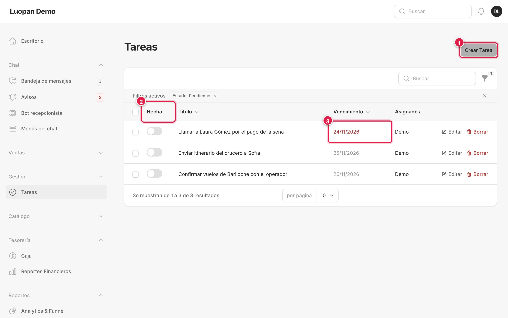
Las tareas pendientes
1
Crear Tarea: agendar algo para vos o para otra persona.
2
Hecha: encendé el interruptor cuando la terminaste. Desaparece de la lista de pendientes.
3
Vencimiento: en rojo si es para hoy o ya pasó.
Ejemplo Hoy tenés "Llamar a Laura Gómez por el pago de la seña". La llamás, registrás el pago en el expediente y encendés Hecha.
Tesorería
20. Caja: cobros y pagos
Menú: Tesorería → Caja
Cada vez que entra o sale plata, se anota acá. Cobro es lo que te paga un cliente; pago es lo que pagás vos (a un proveedor, un gasto, un sueldo).
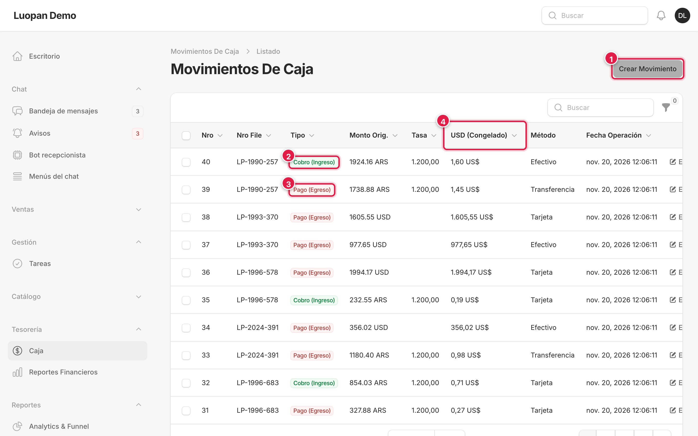
Los movimientos de la caja
1
Crear Movimiento: anotar un cobro o un pago.
2
Cobro (Ingreso), en verde.
3
Pago (Egreso), en rojo.
4
USD (Congelado): cuántos dólares valía ese movimiento el día que se hizo. Ese valor no cambia más.
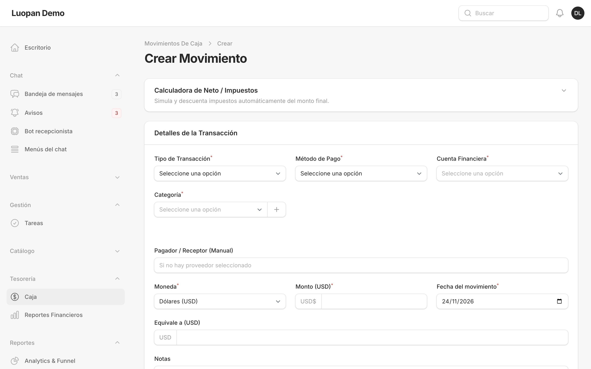
Cargar un movimiento nuevo
Elegí el Tipo de Transacción (cobro o pago), el Método de Pago (efectivo, transferencia, tarjeta…) y la Cuenta donde entra o sale la plata.
Elegí la Categoría (por ejemplo Pago de Pasajero o Pago a Proveedor).
Si es de un viaje, elegí el expediente. Si es un pago a un proveedor, elegilo también.
Elegí la Moneda y escribí el Monto. Si es en pesos, elegí la cotización: abajo ves a cuántos dólares equivale.
Revisá la fecha, agregá una nota o el comprobante si querés, y guardá.
Calculadora de comisiones Arriba de todo hay una calculadora plegada: cargás lo que pagó el cliente y los porcentajes que te descuenta el banco o la tarjeta, y te dice cuánto te queda en realidad.
21. Reportes financieros
Menú: Tesorería → Reportes Financieros · administradores y finanzas
Cuánto entró y cuánto salió cada mes del año, en dólares.
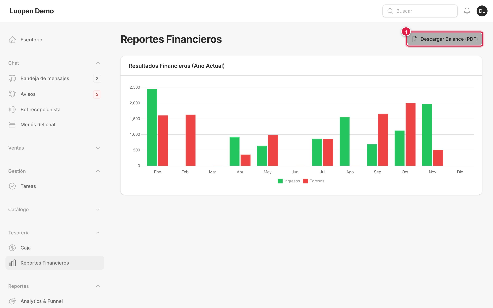
Ingresos (verde) y egresos (rojo) de cada mes
1
Descargar Balance (PDF): baja el resumen del año para imprimirlo o mandárselo al contador.
Se cuenta por la fecha real Cada movimiento cae en el mes de la fecha que cargaste en la Caja, no en el día en que lo anotaste.
Reportes
22. Seguimiento de consultas (estadísticas)
Menú: Reportes → Analytics & Funnel
Cuántas consultas recibiste, cuántas se vendieron, cuántas se perdieron y cuántas siguen abiertas. Cada número es un link a esas consultas, para hacerles el seguimiento.
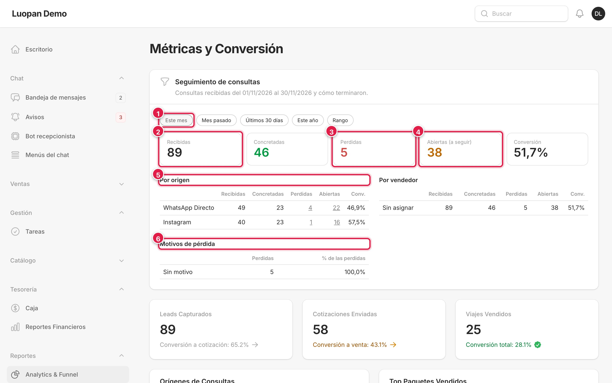
El seguimiento de consultas del mes
1
Período:Este mes, Mes pasado, Últimos 30 días, Este año o un Rango de fechas que elijas.
2
Recibidas: todas las consultas que entraron en ese período.
3
Perdidas: las que terminaron sin venta. Hacé clic para ver cuáles fueron.
4
Abiertas (a seguir): las que todavía se pueden vender. Hacé clic y empezá a llamarlas.
5
Por origen (WhatsApp, Instagram, web…) y por vendedor: dónde y quién vende más.
6
Motivos de pérdida: por qué se perdieron (precio, fechas, otra agencia…). Sale de lo que se carga al marcar una consulta como perdida (sección 12).
Ejemplo En noviembre entraron 89 consultas, se vendieron 46 y quedan 38 abiertas. Hacés clic en el 38: se abre la lista de esas consultas, ordenada por urgencia, para que el equipo las llame.
Conversión El porcentaje de la derecha dice cuántas de cada 100 consultas terminan en venta. Si baja, mirá los motivos de pérdida para saber qué mejorar.
Sistema
23. Seguimiento automático
Menú: Sistema → Seguimiento automático · solo administradores
Reglas que revisan cada hora que ninguna consulta ni presupuesto quede olvidado, y crean tareas o avisos cuando hace falta.
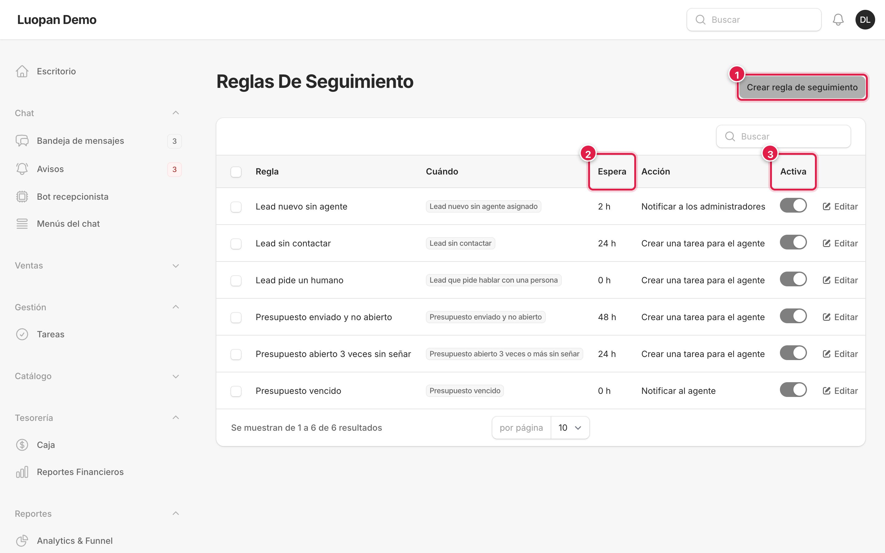
Las reglas que vienen listas
1
Crear regla de seguimiento: agregar una regla nueva.
2
Espera: cuánto tiempo pasa antes de actuar (por ejemplo, 24 horas sin contactar).
3
Activa: encendé o apagá cada regla.
Cuándo
Espera
Qué hace
Consulta nueva sin vendedor
2 h
Avisa a los administradores
Consulta sin contactar
24 h
Crea una tarea para el vendedor
Pide hablar con una persona
enseguida
Crea una tarea urgente
Presupuesto enviado y no abierto
48 h
Tarea "Llamar a…"
Presupuesto abierto 3 veces y sin seña
24 h
Tarea "Cerrar la venta con…"
Presupuesto vencido
enseguida
Avisa al vendedor
Sin avisos repetidos Cada regla actúa una sola vez por consulta o presupuesto.
Configuración
24. Marca blanca (configuración)
Menú: Configuración → Marca Blanca · solo administradores
Los datos y la imagen de tu agencia: nombre, logo, colores, contacto, la IA y las reglas de cobro.
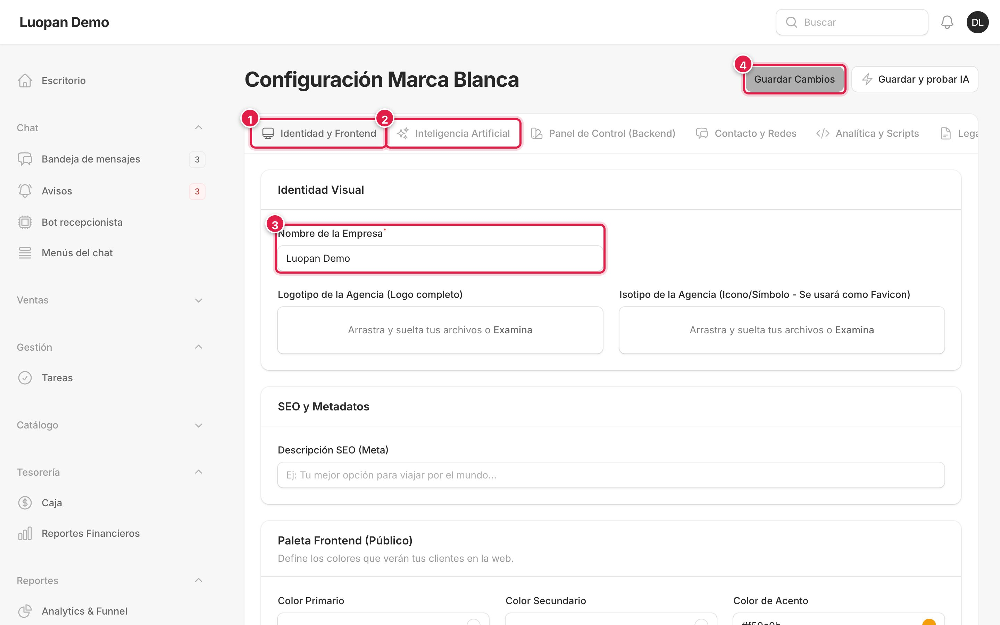
La configuración de la agencia, organizada en pestañas
1
Identidad y Frontend: nombre, logo y colores de la web.
2
Inteligencia Artificial: qué IA se usa y su clave. Más a la derecha: Contacto y Redes, Analítica, Legal, Finanzas y otras.
3
Nombre de la Empresa: el que ven tus clientes.
4
Guardar Cambios: sin este clic no se guarda nada. Guardar y probar IA además comprueba que la IA responda.
Cambiá una cosa por vez Hacé un cambio, guardá y mirá cómo quedó. Si algo no te gusta, es fácil volver atrás.
25. Usuarios del equipo
Menú: Sistema → Usuarios · solo administradores
Las personas que usan el sistema, con su rol y sus permisos.
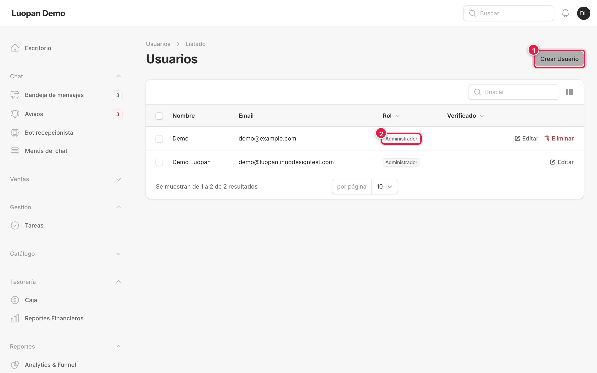
Los usuarios del equipo
1
Crear Usuario: sumar a una persona al equipo.
2
Rol: lo que puede hacer (ver tabla).
Rol
Qué puede hacer
Administrador
Todo: usuarios, configuración, finanzas y sistema.
Ventas
Consultas y presupuestos. Ve las suyas y las que no tienen vendedor.
Finanzas
Todos los expedientes, la caja y los reportes financieros.
Staff
Acceso básico, más los permisos que le dé el administrador.
Hacé clic en Crear Usuario.
Escribí el nombre, el correo y una contraseña inicial.
Elegí el rol y, si hace falta, tildá permisos extra.
Guardá y pasale a la persona su correo y su contraseña.
Seguridad Solo un administrador puede crear usuarios o cambiar permisos, y nadie puede darse permisos a sí mismo. Un administrador tampoco puede borrar su propia cuenta.
26. Proveedores
Menú: Sistema → Proveedores
Hoteles, aerolíneas, mayoristas y demás empresas a las que les comprás servicios, con lo que les debés.
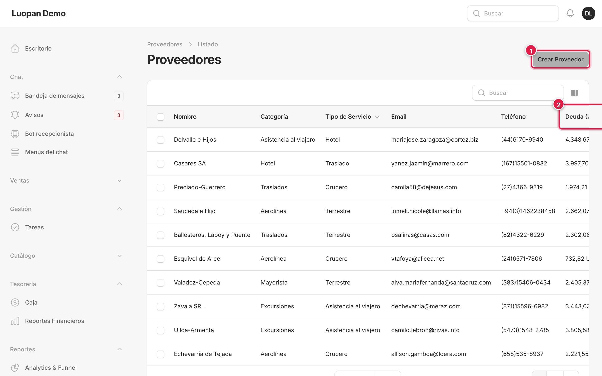
La lista de proveedores
1
Crear Proveedor: cargar uno nuevo, con sus datos bancarios.
2
Deuda (USD): cuánto le debés. Es lo que cargaste como costo en los expedientes menos lo que ya le pagaste desde la Caja.
También en SistemaTipos de Servicio (la lista de servicios que aparece al armar un presupuesto) y Categorías (para ordenar los movimientos de caja).
27. Canales y plantillas de WhatsApp
Menú: Sistema → Canales de mensajería · Sistema → Plantillas de WhatsApp · administradores
Desde acá se conectan las cuentas de WhatsApp, Instagram y Messenger, y se cargan los mensajes aprobados por WhatsApp.
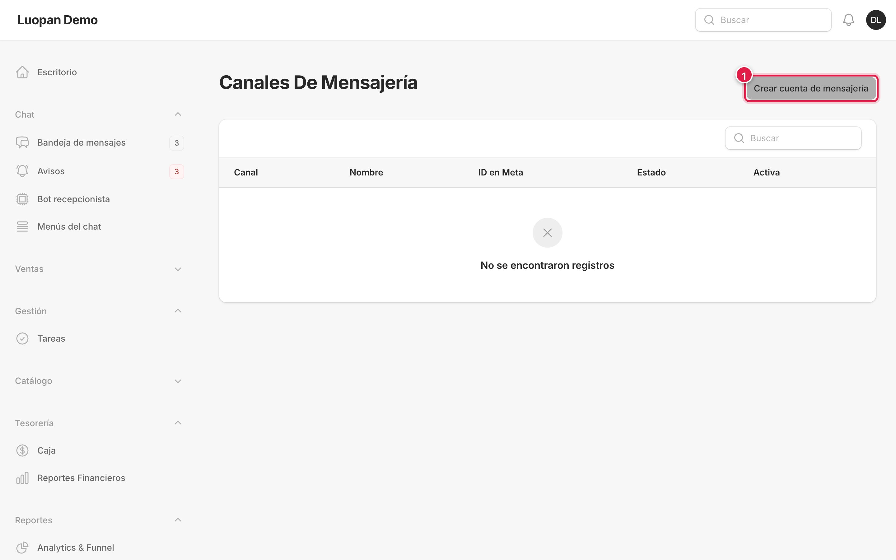
Canales de mensajería
1
Crear cuenta de mensajería: conectar una cuenta de Instagram o una página de Facebook (Messenger). Lo hace quien instaló el sistema, con los datos de Meta.
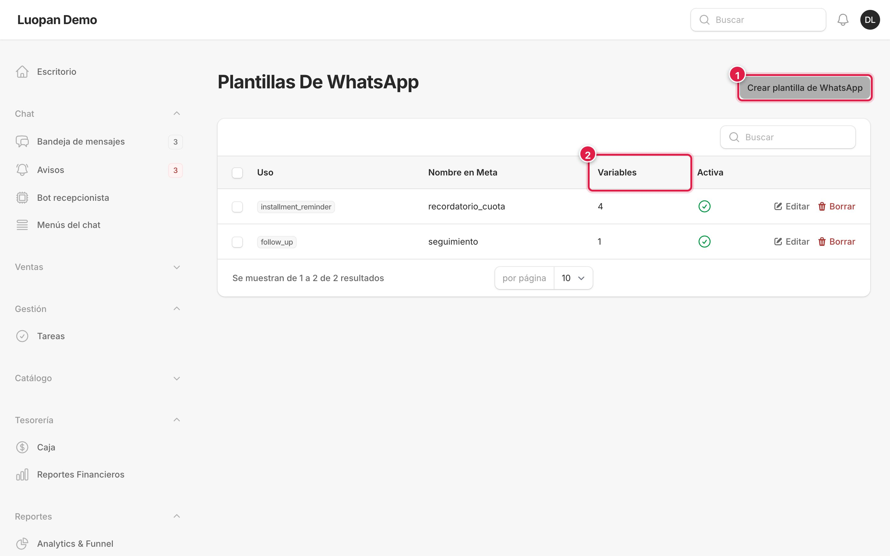
Plantillas de WhatsApp
1
Crear plantilla de WhatsApp: cargá una plantilla con el mismo nombre exacto que aprobó Meta.
2
Variables: cuántos datos se completan en la plantilla (por ejemplo, nombre, cuota, monto y vencimiento).
¿Para qué sirven las plantillas? Para escribirle a un cliente después de las 24 horas de su último mensaje, y para los recordatorios automáticos de cuotas por WhatsApp.
28. Preguntas frecuentes
¿En qué orden atiendo las consultas?
En el que te muestra la lista: ya viene ordenada por urgencia. Empezá por la pestaña Para hoy y atendé de arriba hacia abajo.
Respondí desde el celular, ¿se ve en el sistema?
Sí, si WhatsApp está conectado con Zernio: lo que escribís desde la app WhatsApp Business aparece en la bandeja marcado como Celular, y el bot se pone en pausa igual que si hubieras respondido desde el sistema.
¿Por qué el bot no le respondió a un cliente?
Porque alguien del equipo le respondió hace poco (el bot se pausa unas horas), porque llegó al máximo de respuestas del día o porque se terminó el presupuesto mensual de IA. En los dos últimos casos queda un aviso en Chat → Avisos.
No me aparece «Enviar PDF por WhatsApp» en un expediente
El cliente no tiene una conversación de WhatsApp abierta o WhatsApp no está conectado. Si el botón está gris, pasaron más de 24 horas desde su último mensaje.
¿Puedo cobrar en pesos un viaje que está en dólares?
Sí. Elegí pesos y la cotización del día: el sistema calcula cuántos dólares cubre ese pago.
El cliente pagó más que la cuota
El sobrante se aplica solo a las cuotas siguientes.
Me equivoqué al cargar algo
Abrilo con Editar, corregí y hacé clic en Guardar cambios. Si borraste algo por error, avisale a un administrador.
Los mails o los recordatorios no salen
Avisale al administrador: puede que el correo no esté configurado o que el cron esté frenado (aparece un cartel rojo en el Escritorio).
¿Te trabaste? Hacé una captura de pantalla de lo que ves y mandásela al administrador del sistema. Con eso es mucho más fácil ayudarte.